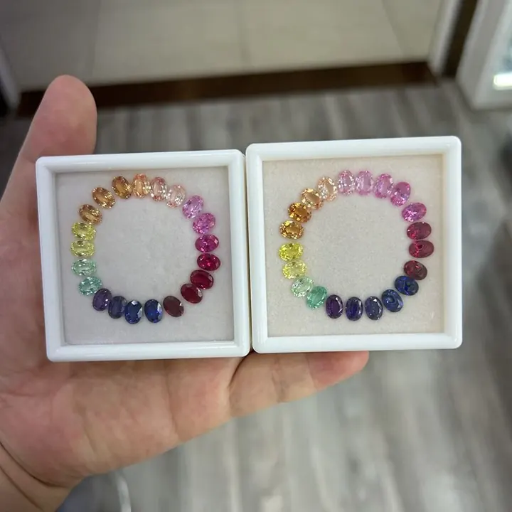

藍寶石顏色科學：鐵與鈦的藍色配方
藍寶石的藍不是染料，是鐵與鈦在晶格裡跳了一支電子舞——顏色科學，從一對離子開始。

核心定義
藍寶石是剛玉（Al₂O₃）的一員，它的藍色主要來自鐵（Fe）與鈦（Ti）的「電荷轉移」（charge transfer）：鐵與鈦離子對吸收特定波長的光，讓寶石呈現藍色。沒有鐵鈦的剛玉是無色的——它叫「白寶石」。
顏色的配方是地質的化學遊戲：鐵鈦含量與比例、離子價態、色帶分布，共同決定一顆藍寶是天空藍、皇家藍、還是帶灰帶綠的藍。而色帶（color zoning）——藍寶石中常見的深淺分層——正是結晶時成分不均的紀錄。
特徵與分類
| 配方/狀態 | 顏色傾向 | 說明 |
|---|---|---|
| 鐵鈦適中 | 明亮藍 | 經典藍寶 |
| 鐵多鈦少 | 灰藍、墨藍 | 偏暗、常見澳洲 |
| 鈦多 | 深藍近黑 | 過深 |
| 鉻釩介入 | 紫藍、粉橙（帕帕拉恰） | 特殊色系 |
| 加熱（還原） | 藍更純、灰感減輕 | 熱處理常見目的 |
色帶是藍寶的「簽名」：許多藍寶在同一顆石頭裡呈現深淺不一的藍帶，斯里蘭卡藍寶常見「墨水藍」色帶，澳洲藍寶色帶更是明顯。切割師會盡量把色帶藏到腰圍，但鑑定師一眼就能看出。
科學原理
電荷轉移的機制：鐵離子（Fe²⁺/Fe³⁺）與鈦離子（Ti⁴⁺）相鄰時，光線讓電子在兩者之間「跳躍」（Fe²⁺ + Ti⁴⁺ → Fe³⁺ + Ti³⁺），吸收紅橙段光，穿透藍段——這就是藍色的來源。鐵太多會讓顏色發暗發灰，鈦太多則發黑。
高溫加熱改變離子價態：還原環境加熱可把 Fe³⁺ 轉為 Fe²⁺，讓灰藍變鮮藍——這就是熱處理提色的化學基礎。鑑定師用光譜分辨「天然的藍」與「加熱的藍」，靠的正是這些微妙的價態差異。
鑑定與鑑別方法
- 分光鏡看鐵鈦吸收譜：確認藍色來源
- 檢查色帶：天然藍寶常見深淺藍帶
- 看加熱特徵：針狀物熔融、暈環等
- 注意擴散處理：顏色只有表面一層皮
- 排除合成：焰熔法合成藍寶顏色過於均勻
市場行情與保養建議
市場上，顏色是藍寶價格的第一位：皇家藍、矢車菊藍等頂級色標身價最高；灰藍、墨藍則大宗平價。加熱與否、產地證書、色帶位置，都是議價的關鍵。
挑選建議：先看「濃而亮」的藍，再看色帶是否影響正面觀感，最後要求權威證書確認處理狀態與色標。
常見誤區
不是。藍色是鐵鈦離子對的電荷轉移造成的選擇性吸收——剛玉本身不含「藍色素」。寶石的顏色，是光與電子結構的對話。
色帶是天然特徵，多數藍寶都有；只要色帶不影響正面美感、不讓顏色變成「條紋」，無需排斥。完全均勻的藍反而要懷疑合成。
冷知識
藍寶石與紅寶石都是 Al₂O₃（剛玉），只是致色元素不同——鉻變紅、鐵鈦變藍、無雜質則無色。同一個礦物家族，一張變色龍的譜系。
無色剛玉（白寶石）硬度 9、耐刮耐磨，雖不如彩色剛玉受寵，但作為「最耐用的透明寶石」自有用途。
反直覺觀點
同一對離子：比例對→鮮藍；鐵太多→灰藍；鈦太多→黑藍。藍寶石的成敗，就在離子比例的一念之間。
加熱改變離子價態、讓藍色更純——它不添加外來物質，只是讓天然的配方「調到最佳」。所以證書標示加熱，不是貶義，而是誠實。